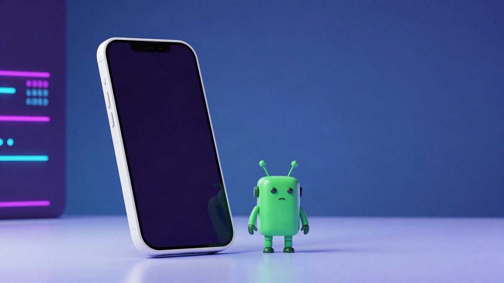

Andarium: Android 17 na iPhoneu i iPadu je stigao na App Store

Na Appleov App Store stigla je aplikacija Andarium, virtualni stroj koji na iPhoneu i iPadu pokreće Android 17 temeljen na LineageOS-u. Radi lokalno, bez računa, oglasa i praćenja, a izvorni kod je objavljen na GitHubu. Potreban je čip A14 ili noviji, a cijena i dostupnost u Europi još nisu poznate.
Andarium je virtualni stroj koji na iPhoneu i iPadu pokreće Android aplikacije. Prema opisu u trgovini, u njega je ugrađen Android 17 temeljen na LineageOS-u. Sve radi lokalno na uređaju, bez prijave računom, oglasa i praćenja.
APK datoteke instaliraju se izravno iz aplikacije Datoteke. Andarium ima i ugrađeni preglednik datoteka za pregled prostora za pohranu te za uvoz i izvoz datoteka i mapa. Odmah nakon pokretanja u sustavu su samo osnovne aplikacije, poput postavki, kamere i galerije. Sve ostalo korisnik mora sam pripremiti.
Mogućnosti
Andarium podržava 3D grafiku i reprodukciju videa, a razlučivost zaslona može se slobodno podešavati. Rade rotacija zaslona, senzori pokreta, kompas i multitouch. Na zaslonu je pomični izbornik s tipkama za uključivanje, glasnoću, povratak, početni zaslon i postavke. Na iPadu rade vanjska tipkovnica, miš i trackpad, a podržani su i Bluetooth te MFi kontroleri.
Možeš birati količinu CPU-a, memorije i prostora za pohranu virtualnog stroja. Isto tako možeš odlučiti hoće li se stroj uključiti u iCloud ili u sigurnosnu kopiju uređaja. Moguće je spremati snapshotove i pomoću njih vraćati stanje virtualnog stroja. Kamera, lokacija, mikrofon i haptički odgovor uključuju se zasebnim prekidačima.
Zahtjevi i ograničenja
Potreban je uređaj s Appleovim čipom A14 ili novijim, dakle iPhone 12 ili noviji te iPad s čipom A14 ili M serije. Za prvo postavljanje preporučuje se najmanje 10 GB slobodnog prostora.
Virtualni stroj radi samo dok je Andarium u prvom planu, a pri prebacivanju na drugu aplikaciju automatski se pauzira. Novinari IT Homea koji su isprobali aplikaciju navode da se pri radu pojavljuju zastajkivanja i pad broja sličica u sekundi. Ako se uređaj pregrije, aplikacija to dojavi i smanji frame rate.
Zadana RAM memorija virtualnog stroja je 4 GB. Pri postavci iznad 4,19 GB aplikacija upozorava da bi igre mogle potrošiti svu grafičku memoriju, a ako se postavi više od 4,5 GB, iOS bi mogao zatvoriti Andarium.
Razvojni programer navodi da aplikacija ne prikuplja osobne podatke, analitiku ni telemetriju. Izvorni kod je objavljen na GitHubu.
Izvor: ITHome (IT之家)
Povezani članci
 Humanoidni robot Howl uči skupljati jaja s poda peradarnika, NC State cilja na 2027.17. studenoga 2026.
Humanoidni robot Howl uči skupljati jaja s poda peradarnika, NC State cilja na 2027.17. studenoga 2026. Moždani implantat vratio govor pacijentima s ALS-om: razumljivost do 94 posto, jedna pacijentica ponovno pjeva15. studenoga 2026.
Moždani implantat vratio govor pacijentima s ALS-om: razumljivost do 94 posto, jedna pacijentica ponovno pjeva15. studenoga 2026. Windows 11 pokrenut na Appleovom sklopivom iPhoneu: Googleov Ammaar Reshi objavio je projekt WindowsiOS14. studenoga 2026.
Windows 11 pokrenut na Appleovom sklopivom iPhoneu: Googleov Ammaar Reshi objavio je projekt WindowsiOS14. studenoga 2026.